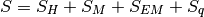
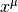
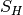
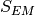
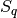
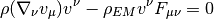
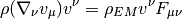

Gravitation and Electromagnetism as a Field Theory¶
The action for macroscopic gravity, electromagnetism and (possibly) charged relativistic dust is:

where:
where  is the field of the matter,  is the electromagnetic
field and
is the electromagnetic
field and  is the gravitational field. We vary with respect to each
of them to obtain (interacting) equations of motion.
is the gravitational field. We vary with respect to each
of them to obtain (interacting) equations of motion.  is the speed of light,
is the speed of light,
 is the gravitational constant, the permeability of vacuum.
is the gravitational constant, the permeability of vacuum.  is the mass density of the dust, is the charge density of the dust,
is 4-velocity of the dust,
is the electromagnetic field tensor,
is the mass density of the dust, is the charge density of the dust,
is 4-velocity of the dust,
is the electromagnetic field tensor,  is the Ricci scalar.
is the Ricci scalar.
Gravitation¶
We vary with respect to . By changing the metric, we also change
the invariant volume element (thus also ), so we need to be careful to
vary properly. We start with :
![\delta S_H = \delta {c^4\over 16\pi G} \int R \sqrt{-g} \d^4 x =
= {c^4\over 16\pi G} \int
(\delta g^{\mu\nu}) R_{\mu\nu} \sqrt{-g}
+g^{\mu\nu} (\delta R_{\mu\nu}) \sqrt{-g}
+R (\delta \sqrt{-g})
\d^4 x=
= {c^4\over 16\pi G} \int
(\delta g^{\mu\nu}) R_{\mu\nu} \sqrt{-g}
+g^{\mu\nu} \left(
\nabla_\lambda(\delta \Gamma^\lambda_{\nu\mu})
-\nabla_\nu(\delta \Gamma^\lambda_{\lambda\mu})
\right)\sqrt{-g}
+R (
-\half \sqrt{-g}\, g_{\mu\nu} (\delta g^{\mu\nu}))
\d^4 x=
= {c^4\over 16\pi G} \int
(\delta g^{\mu\nu}) R_{\mu\nu} \sqrt{-g}
+ \left(
\nabla_\lambda g^{\mu\nu}(\delta \Gamma^\lambda_{\nu\mu})
-\nabla_\nu g^{\mu\nu}(\delta \Gamma^\lambda_{\lambda\mu})
\right)\sqrt{-g}
-\half R g_{\mu\nu} \sqrt{-g}\,
(\delta g^{\mu\nu})
\d^4 x=
= {c^4\over 16\pi G} \int
(\delta g^{\mu\nu}) R_{\mu\nu} \sqrt{-g}
-\half R g_{\mu\nu} \sqrt{-g}\,
(\delta g^{\mu\nu})
\d^4 x=
= {c^4\over 16\pi G} \int \left( R_{\mu\nu} -\half R g_{\mu\nu} \right)
(\delta g^{\mu\nu}) \sqrt{-g}
\d^4 x](../../_images/math/0b491e7ba3e91913fccf53189df6ca9114561d8a.png)
Variation of  is:
is:
![\delta S_M = -c \delta \int \rho \sqrt{v_\mu v^\mu} \sqrt{-g} \d^4 x =
= - \delta \int c \sqrt{\textgoth{p}_\mu \textgoth{p}^\mu} \d^4 x =
= - \int c {\delta(g^{\mu\nu} \textgoth{p}_\mu \textgoth{p}_\nu)
\over 2\sqrt{\textgoth{p}_\alpha \textgoth{p}^\alpha}} \d^4 x =
= - \int c { \textgoth{p}_\mu \textgoth{p}_\nu
\over 2\sqrt{\textgoth{p}_\alpha \textgoth{p}^\alpha}}
\delta(g^{\mu\nu})\d^4 x =
= - \int c { \rho v_\mu \rho v_\nu
\sqrt{-g}^2
\over 2 \rho c \sqrt{-g} }
\delta(g^{\mu\nu})\d^4 x =
= - \int \half \rho v_\mu v_\nu
\delta(g^{\mu\nu}) \sqrt{-g} \d^4 x](../../_images/math/1be32f3650d9b08ce44a5c8f5b79d00a245f96aa.png)
The variation of  is:
![\delta S_{EM} = -\delta \int {1\over 4\mu_0} F_{\alpha\beta} F^{\alpha\beta}
\sqrt{-g}\d^4 x =
= -\delta \int {1\over 4\mu_0} g^{\alpha\lambda} g^{\beta\rho}
F_{\alpha\beta} F_{\lambda\rho} \sqrt{-g}\d^4 x =
= -{1\over 4\mu_0} \int \left(\delta (g^{\alpha\lambda} g^{\beta\rho})
F_{\alpha\beta} F_{\lambda\rho} \sqrt{-g}
+ g^{\alpha\mu} g^{\beta\rho}
F_{\alpha\beta} F_{\lambda\rho} \left(\delta \sqrt{-g}
\right)
\right)\d^4 x =
= -{1\over 4\mu_0} \int \left(2(\delta g^{\alpha\lambda}) g^{\beta\rho}
F_{\alpha\beta} F_{\lambda\rho} \sqrt{-g}
+ g^{\alpha\lambda} g^{\beta\rho}
F_{\alpha\beta} F_{\lambda\rho} \left(-\half \sqrt{-g}
g_{\mu\nu} (\delta g^{\mu\nu})
\right)
\right)\d^4 x =
= -{1\over 4\mu_0} \int \left(2(\delta g^{\alpha\lambda})
F_{\alpha\beta} F_\lambda{}^\beta
-\half F_{\alpha\beta} F^{\alpha\beta}
g_{\mu\nu} (\delta g^{\mu\nu})
\right) \sqrt{-g} \d^4 x =
= -{1\over 2\mu_0} \int \left(
F_{\mu\beta} F_\nu{}^\beta
-{1\over 4} F_{\alpha\beta} F^{\alpha\beta}
g_{\mu\nu}
\right) (\delta g^{\mu\nu}) \sqrt{-g} \d^4 x](../../_images/math/0a437e2e3b3ceb68a41ddc879af411b69da191df.png)
The variation of .
The equations of motion are:
We rearrange:
We define the stress energy tensor as:
(1)
(2)
And we get:
(3)
The equations (1) are called Einstein’s equations and the equations (3) are stress energy tensors for the relativistic dust and electromagnetism. The equation (2) is the stress energy tensor corresponding to the given action. Sometimes it is not possible to write an action for more complex matter (perfect fluid, Navier-Stokes equations for fluid, ...) in which case we cannot use (2), but we can still specify the stress energy tensor directly and (1) are the equations of motion.
Electromagnetism¶
We vary with respect to  .
The variation of
.
The variation of  . The variation of
. The variation of  .
The variation of is:
.
The variation of is:
![\delta S_{EM} =
= -{1\over4\mu_0} \delta \int F_{\mu\nu} F^{\mu\nu}
\sqrt{-g} \d^4 x =
= -{1\over2\mu_0} \int F^{\mu\nu} (\delta F_{\mu\nu})
\sqrt{-g} \d^4 x =
= -{1\over\mu_0} \int F^{\mu\nu} (\delta \partial_\nu A_\mu)
\sqrt{-g} \d^4 x =
= -{1\over\mu_0} \int F^{\mu\nu} \partial_\nu (\delta A_\mu)
\sqrt{-g} \d^4 x =
= {1\over\mu_0} \int \partial_\nu (F^{\mu\nu}\sqrt{-g})
(\delta A_\mu) \d^4 x =
= {1\over\mu_0} \int \left(
{1\over\sqrt{-g}}\partial_\nu (F^{\mu\nu}\sqrt{-g}) \right)
(\delta A_\mu) \sqrt{-g}\d^4 x =
= {1\over\mu_0} \int \nabla_\mu F^{\mu\nu} (\delta A_\nu)
\sqrt{-g} \d^4 x](../../_images/math/1d835a620a819f8827172c8681d0c663ecefc60a.png)
The variation of  is:
The equation of motion is:
Rearranging:
Relativistic Dust¶
We vary the whole action with respect to .
The variation of .
The variation of is:
![\delta S_M
= -c\delta \int \rho \sqrt{v_\mu v^\mu} \sqrt{-g} \d^4 x =
= - \delta \int c \sqrt{\textgoth{p}_\mu \textgoth{p}^\mu} \d^4 x =
= - \int c {\delta(g^{\mu\nu} \textgoth{p}_\mu \textgoth{p}_\nu)
\over 2\sqrt{\textgoth{p}_\alpha \textgoth{p}^\alpha}} \d^4 x =
= - \int c { 2 g^{\mu\nu} \textgoth{p}_\mu (\delta \textgoth{p}_\nu)
\over 2\sqrt{\textgoth{p}_\alpha \textgoth{p}^\alpha}} \d^4 x =
= - \int c { \textgoth{p}_\mu \over \sqrt{\textgoth{p}_\alpha \textgoth{p}^\alpha}}
(\delta \textgoth{p}^\mu) \d^4 x =
= - \int c { \textgoth{p}_\mu \over \sqrt{\textgoth{p}_\alpha \textgoth{p}^\alpha}}
\partial_\nu \left(\textgoth{p}^\nu(\delta x^\mu) - \textgoth{p}^\mu (\delta x^\nu)\right)
\d^4 x =
= \int c \partial_\nu \left({ \textgoth{p}_\mu \over
\sqrt{\textgoth{p}_\alpha \textgoth{p}^\alpha}}
\right)
\left(\textgoth{p}^\nu(\delta x^\mu) - \textgoth{p}^\mu (\delta x^\nu)\right)
\d^4 x =
= \int c \left(
\partial_\nu \left({ \textgoth{p}_\mu \over \sqrt{\textgoth{p}_\alpha \textgoth{p}^\alpha}} \right)
-\partial_\mu \left({ \textgoth{p}_\nu \over \sqrt{\textgoth{p}_\alpha \textgoth{p}^\alpha}} \right)
\right)
\textgoth{p}^\nu(\delta x^\mu)
\d^4 x =
= \int c \left(
\nabla_\nu \left({ \textgoth{p}_\mu \over \sqrt{\textgoth{p}_\alpha \textgoth{p}^\alpha}} \right)
-\nabla_\mu \left({ \textgoth{p}_\nu \over \sqrt{\textgoth{p}_\alpha \textgoth{p}^\alpha}} \right)
\right)
\textgoth{p}^\nu(\delta x^\mu)
\d^4 x =
= \int \left( \nabla_\nu v_\mu -\nabla_\mu v_\nu \right)
\rho v^\nu (\delta x^\mu) \sqrt{-g}
\d^4 x =
= \int \rho (\nabla_\nu v_\mu) v^\nu (\delta x^\mu) \sqrt{-g}
\d^4 x](../../_images/math/4ac17153102b4c347b75779810386c352828ae63.png)
The variation of . The variation of is:
![\delta S_q
= - \delta \int \rho_{EM} v^\mu A_\mu \sqrt{-g} \d^4 x =
= - \delta \int \textgoth{j}^\mu A_\mu \d^4 x =
= - \int (\delta \textgoth{j}^\mu) A_\mu \d^4 x =
= - \int \partial_\nu \left(\textgoth{j}^\nu (\delta x^\mu)
- \textgoth{j}^\mu (\delta x^\nu)\right) A_\mu \d^4 x =
= \int \left(\textgoth{j}^\nu (\delta x^\mu)
- \textgoth{j}^\mu (\delta x^\nu)\right) \partial_\nu A_\mu \d^4 x =
= \int \textgoth{j}^\nu (\delta x^\mu) (\partial_\nu A_\mu -\partial_\mu A_\nu)
\d^4 x =
= \int \rho_{EM} v^\nu (\nabla_\nu A_\mu -\nabla_\mu A_\nu)
(\delta x^\mu) \sqrt{-g}
\d^4 x =
= -\int \rho_{EM} v^\nu F_{\mu\nu} (\delta x^\mu) \sqrt{-g}
\d^4 x](../../_images/math/22993ffe5e14b6d6d3e9dba9917c7244cb0f3b64.png)
The equation of motion is:

Rearranging:

This is the geodesic equation with Lorentz force.
Equations of Motion¶
All together, the equations of motion are:
The first equation determines  from the given sources (the stress
energy tensors) on the right hand side, that depend on ,
from the given sources (the stress
energy tensors) on the right hand side, that depend on ,  ,
and . The second equation
determines from the sources ( and ) and from
(through the covariant derivative).
Finally, the last equation determines and from the given fields
(through the electromagnetic field tensor) and (through
the covariant derivative).
,
and . The second equation
determines from the sources ( and ) and from
(through the covariant derivative).
Finally, the last equation determines and from the given fields
(through the electromagnetic field tensor) and (through
the covariant derivative).
Conservation¶
We apply covariant 4-divergence and use Bianci identities on the first equation:
So the total stress energy tensor is conserved. This fact makes the equations of motion (that follow from the action principle) not all independent. The third equation can be derived from the fist two as follows.
We calculate:
and we get:
The first term vanishes, because:
where we used (follows from differentiating
 )
and (contracting symmetric and antisymmetric tensors). We are left
with:
)
and (contracting symmetric and antisymmetric tensors). We are left
with:

Which is the third equation.